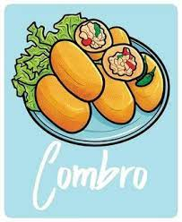

Tuang Kang adalah destinasi kuliner yang memadukan kekayaan kuliner tradisional Sunda dengan suasana yang menggoda selera. Terletak di tengah kota Bogor, restoran ini memanjakan pengunjung dengan keunikan citarasa Sunda yang autentik dan pelayanan yang ramah. Dengan desain interior yang memukau, Tuang Kang menciptakan suasana yang hangat dan nyaman, mencerminkan keindahan alam dan kebudayaan Sunda..
baca selengkapnyaSoto Mie adalah hidangan sup khas Indonesia yang berisi mie, daging sapi, dan beberapa bahan tambahan seperti tauge, tomat, daun seledri, dan bawang goreng. Kuahnya biasanya kental dan berbumbu, terkadang diberi tambahan kecap manis atau sambal sesuai selera.
RP.30k
Nasi Tutug Oncom adalah hidangan nasi yang dicampur dengan oncom, sebuah jenis fermentasi kedelai yang khas Indonesia. Nasi ini kemudian dihaluskan dan dimasak bersama bumbu khas seperti terasi, garam, dan bawang merah.
RP.35kNasi Liwet adalah hidangan nasi khas Jawa Barat, Indonesia. Nasi ini dimasak dengan santan dan daun salam, kemudian disajikan dengan berbagai lauk seperti ayam, tempe, tahu, dan sambal.
RP.100kCombro adalah camilan khas Sunda yang terbuat dari singkong yang diisi dengan oncom dan rempah-rempah. Kemudian, singkong dihaluskan, dibentuk bulat, dan digoreng hingga kecoklatan. Combro biasanya disajikan dengan sambal.
RP.25kKaredok adalah jenis salad khas Sunda yang terbuat dari sayuran mentah seperti kacang panjang, tauge, ketimun, kol, dan kembang turi yang disiram dengan bumbu kacang yang terbuat dari oncom, kacang tanah, dan cabai.
RP.25kCireng adalah singkatan dari "aci digoreng," yaitu bola-bola tepung kanji yang diisi dengan bahan-bahan seperti daging ayam, udang, atau ikan, dan kemudian digoreng. Cireng sering disajikan dengan sambal kacang atau saus pedas.
RP.25k